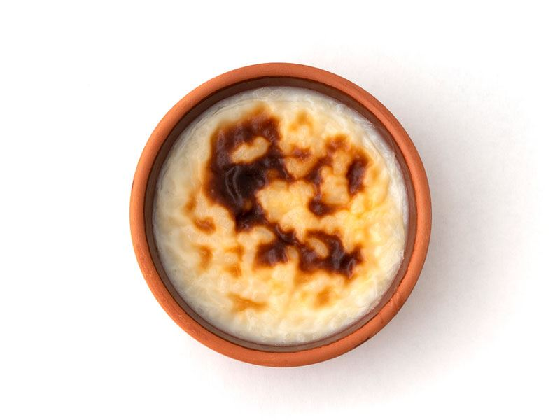

Sütlaç

Sütlü tatlılar içerisinde en çok yapılanı sütlaçtır. Kalorisinin düşük olması da sütlacın tercih edilmesinin sebeplerindendir. Sıcak ya da soğuk bir şekilde tüketebileceğiniz sütlaçlarınız hem yaz hem de kış günlerinde tercih edebileceğiniz bir tatlı çeşididir.
Yapılışı
- Sadece bir kez sudan geçirerek yıkadığınız pirinci tencereye alın ve 2 su bardağı sıcak suyu ekleyerek kısık ateşte pişirmeye başlayın. Bu sırada ara ara nazikçe karıştırın.
- Pirinç, suyu çekip lapa hale gelince üzerine sütü ilave edin. Karıştırın ve süt kaynayana kadar ara ara karıştırmaya devam edin. Kaynadıktan sonra altını kısın, 8-10 dakika daha bu şekilde karıştırarak kısık ateşte pişirin.
- Ardından şekeri ekleyin, karıştırın. Tekrar kaynamasını bekleyin ve 4-5 dakika daha da kısık ateşte bu şekilde kaynatın.
- Nişastayı eklemek için bir kabın içerisine alın, 1 çay bardağı suyla karıştırın ve aynı anda hem karıştırıp hem tencereye ekleyin. Azar azar dökerek eklerseniz topaklanma riskini de engellemiş olursunuz.
- Karıştırdıktan sonra hafifçe kıvam alana kadar pişirin. Bu sırada tekrar kaynayacak ve minik minik balonların yüzeye ulaştığını göreceksiniz, bunu gördükten sonra kısık ateşe alıp 1-2 dakika daha pişirin ve ardından ocaktan alın. Bu noktada sütlacın kıvamı akışkan bir boza kıvamında olmalıdır.
- Sütlaç harcını bir kepçeyle kaselere dağıtın. Her kepçeden önce bir kez karıştırın ki bu sırada pirinçler en dibe çökmesin. Her kasede eşit miktarda pirinç olması için karıştırarak kepçeyle alın ve dökün.
- Oda sıcaklığında soğuduktan sonra buzdolabında en az 2 saat, tercihen 1 akşam kadar bekletin ve servis etmeden önce buzdolabından çıkarıp 5 dakika bekletin, tarçın serperek servis edin. Afiyet olsun!
Afiyet Olsun